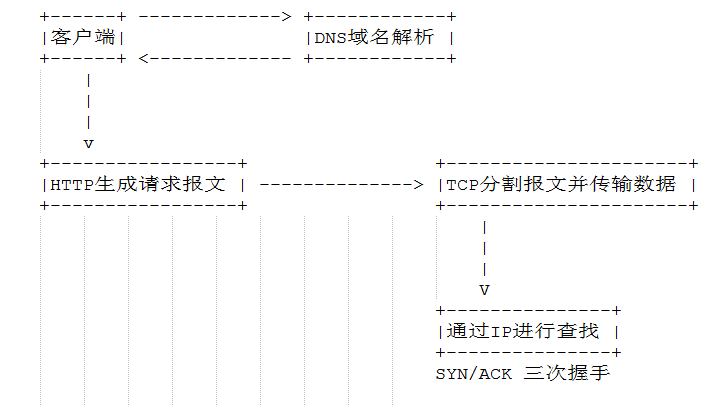

什么是 HTTP, ARP, DNS 他们之间是怎么工作的
- 超文本传输协议,基于TCP/IP协议,属于应用层的协议.
- IP协议的作用是把各个数据包发送给对方,其中两个重要的条件是IP地址和MAC地址.
- ARP协议是一种解析地址的协议,根据通信方IP地址就可以反查对应的MAC地址.
- TCP位于传输层,提供可靠的字节流服务(将数据分割为多段报文),并采用三次握手的方式进行数据确认.
- DNS负责域名的解析工作,提供域名到IP的解析工作.
- HTTP是无状态的协议.
各种协议的关系

URL
URI是Uniform Resource Identifier的缩写(RFC3986)
| 名称 | 简介 |
|---|---|
| Uniform | 规定统一的格式如 http, ftp |
| Resource | 可标识的任何东西如 图片,电影 |
| Identifier | 可标识的对象 ,也称标识符 |